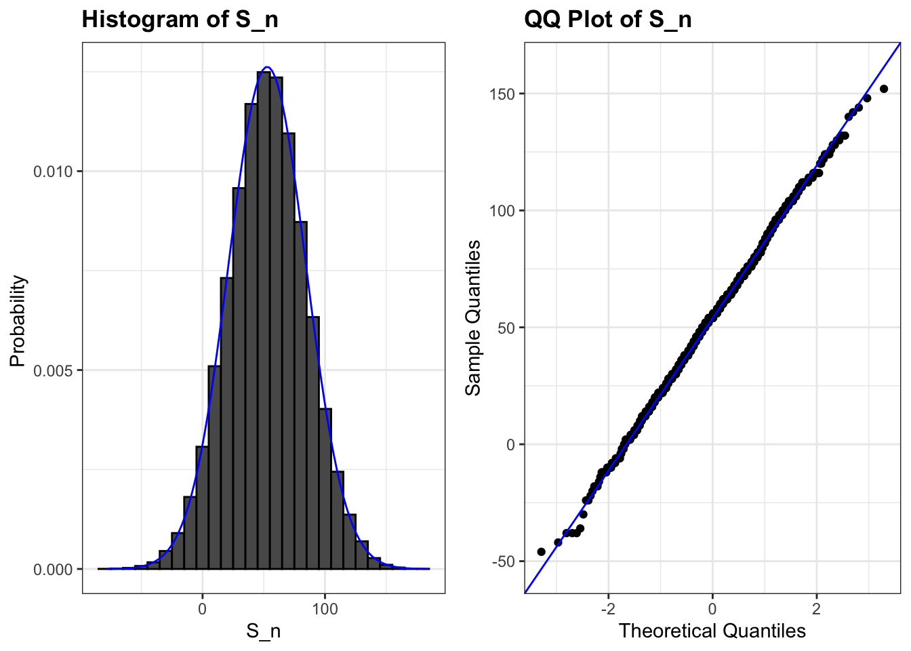

content <- rep(c("article", "breathing", "meditation"), times = c(18, 18, 2))12 Sampling Models and the Central Limit Theorem
In the previous chapter, we introduced random variables and saw how their distributions, expected values, and standard deviations describe uncertainty. In this chapter, we build on those ideas by introducing sampling models, which are mathematical abstractions of how data are generated. We then use the Central Limit Theorem (CLT) to approximate the distribution of sums and averages of independent draws. Through a concrete example based on a stress-reduction app that shows randomly chosen content, we show how the CLT can be used to answer practical questions such as “What is the chance that the app increases stress overall?”
12.1 Sampling models
Many data-generating processes can be effectively modeled as draws from an urn. For example, suppose we want to know whether users find it easier to monitor their blood pressure with a wristband or with a smartwatch. Asking a sample of users which of the two devices they prefer can be viewed as drawing 0s (wristband) and 1s (smartwatch) from an urn containing the preferences of the entire population of users. In epidemiology, we often assume that individuals in a study are random draws from a larger population, where each draw corresponds to an individual’s outcome. Similarly, in experimental research, we treat subjects (worms, flies, mice, or humans, for example) as random draws from a broader population. Randomized experiments follow the same logic: each participant’s assignment to treatment or control can be seen as a random draw from an urn.
Because random sampling and random assignment are fundamental to data analysis, sampling models appear everywhere in statistics. To build intuition, we start with an example where the randomness is built in by design, so the probabilities of the possible outcomes are known exactly. We now define it.
Stress-app example
Suppose the company behind a stress-reduction app hires you to decide whether it should release a new feature. Each time a user opens the feature, the app randomly picks one piece of content from a rotation of 38: 18 short articles about stress (psychoeducation), 18 breathing exercises, and 2 guided meditations. To keep things simple, imagine 1,000 independent users, each opening the feature once. The company wants you to estimate how much the feature can be expected to reduce stress overall and, most importantly, the probability that it increases stress overall. If that probability is too high, they will decide not to release the feature.
To build the model, we assume that each type of content has a fixed effect on the user’s self-reported stress: a breathing exercise or a guided meditation lowers it by one point, while an article raises it by one point, because reading about stress symptoms makes some users more anxious. We define a random variable \(S_n\) to represent the total stress reduction after \(n\) sessions. The content shown in a session is equivalent to drawing a ball from this urn:
Each of the 1,000 outcomes is an independent draw from this urn. If an article comes up, the user’s stress goes up by one point (recorded as −1). Otherwise, it goes down by one point (recorded as 1).
n <- 1000
x <- sample(ifelse(content == "article", -1, 1), n, replace = TRUE)Since we already know the proportions of 1s and −1s, we can simplify:
x <- sample(c(-1, 1), n, replace = TRUE, prob = c(9/19, 10/19))We call this a sampling model because it represents random behavior through repeated sampling from an urn. The total stress reduction, defined as \(S_n\), is simply the sum of these independent draws:
s <- sum(x)Before deriving the distribution of the total stress reduction \(S_n\), it’s worth pausing to ask why we study simplified problems like this one in the first place.
Connecting sampling models to real data
Thinking in terms of a sampling model is central to data analysis under uncertainty. It connects the random variables we study in probability to the datasets we analyze in practice. By imagining data as random draws from an urn, a population, or a randomization procedure, we clarify what our models represent and what assumptions they rely on.
This perspective also underpins much of modern statistics. Tools like confidence intervals, hypothesis tests, and regression all depend on assumptions derived from sampling models. Understanding these assumptions helps us apply these methods thoughtfully and recognize their limits.
Our app example makes these ideas tangible because part of its sampling model is fully known. The app’s randomizer decides which content is shown, so the proportions of articles, breathing exercises, and meditations are explicit and easy to simulate: this is randomness by design, just like random assignment in an experiment. The effect of each type of content, however, is not known. The fixed one-point change in stress is an assumption we made to build the simulation, and a strong simplification, since real effects vary from person to person and from session to session. Real-world data come from even more complex “urns”, such as populations of people with varying reaction times, satisfaction scores, or health outcomes, where the probabilities are assumed rather than known (see When randomness is assumed in the chapter Connecting Data and Probability). When we collect data, we are effectively drawing a random sample from such a population.
This way of thinking builds statistical intuition: every dataset represents a sample from some underlying process, and the validity of our conclusions depends on how well our assumptions about that process hold.
12.2 A Monte Carlo Simulation
To find the probability that the app increases stress overall, we need to estimate the distribution of \(S_n\). In the language of probability, this is \(\Pr(S_n < 0)\). If we define the distribution function \(F(a) = \Pr(S_n \leq a)\), we can answer any question about probabilities involving \(S_n\).
We can estimate \(F(a)\) with a Monte Carlo simulation, generating many realizations of \(S_n\). The following code simulates 1,000 users, each opening the feature once, and repeats the process 100,000 times:
n <- 1000
stress_reduction <- function(n){
x <- sample(c(-1, 1), n, replace = TRUE, prob = c(9/19, 10/19))
sum(x)
}
s <- replicate(100000, stress_reduction(n))The fraction of simulations in which \(S_n \leq a\) approximates \(F(a)\):
mean(s <= a)For instance, the probability that the app increases stress overall is:
mean(s < 0)
#> [1] 0.045A histogram and qqplot of \(S_n\) show that the distribution is approximately normal, an observation that the Central Limit Theorem will soon explain.

12.3 The Central Limit Theorem
The Central Limit Theorem (CLT) states that when the number of draws (the sample size) is large, the distribution of the sum of independent draws is approximately normal. Because sampling models describe so many data-generating processes, the CLT is one of the most important results in statistics.
In the app example, the urn contains 20 types of content that lower stress by one point and 18 that raise it by one point, giving an expected value of:
\[ \mathrm{E}[X] = (20 -18)/38 = 1/19 \approx 0.05. \]
In general, for two possible outcomes \(a\) and \(b\) with probabilities \(p\) and \((1-p)\),
\[ \mathrm{E}[X] = ap + b(1-p). \]
By the properties introduced in Section 11.5, the expected total stress reduction is:
\[ \mathrm{E}[S_n] = n\,\mathrm{E}[X]. \]
So if 1,000 users open the feature, we expect a total stress reduction of about 53 points, or about 0.05 points per user: a very small average benefit.
To quantify uncertainty, we compute the standard error, which measures how much \(S_n\) varies around its expected value. For an urn with two outcomes \(a\) and \(b\) with probabilities \(p\) and \((1-p)\), the standard deviation can be shown to be:
\[ \mathrm{SE}[X] = |b - a|\sqrt{p(1-p)}. \]
In the app example, we obtain:
2*sqrt(90)/19
#> [1] 0.999Thus, the standard error of the sum is:
\[ \mathrm{SE}[S_n] = \sqrt{n}\,\mathrm{SD}[X], \]
which in this case is:
sqrt(n)*2*sqrt(90)/19
#> [1] 31.6These theoretical values agree closely with the Monte Carlo results:
mean(s)
#> [1] 52.5
sd(s)
#> [1] 31.5Using the CLT, we can now compute the probability that the app increases stress overall without simulation:
pnorm(0, n*(20 - 18)/38, sqrt(n)*2*sqrt(90)/19)
#> [1] 0.0478which matches our earlier estimate:
mean(s < 0)
#> [1] 0.045This probability depends strongly on the number of users. With only 100 users, the same small average benefit is much easier to miss:
pnorm(0, 100*(20 - 18)/38, sqrt(100)*2*sqrt(90)/19)
#> [1] 0.299An effect that reliably reduces stress across 1,000 users increases it overall in about 3 out of 10 groups of 100 users. This is one reason why sample size matters so much when we study small effects.
The quantity \((S_n + n)/2\) represents the number of sessions that lowered stress and follows a binomial distribution. Thus, the probability \(\Pr(S_n < 0)\) can also be computed directly:
pbinom(n/2 - 1, size = n, prob = 10/19)
#> [1] 0.0448However, the binomial result applies only to Bernoulli trials. In many real-world settings, data are not binomial, yet we still want to approximate the distribution of sums or averages. For those cases, the CLT provides a general framework that extends far beyond Bernoulli trials.
12.4 How large is large?
The CLT applies when the number of draws is large, but large depends on context. In many cases, 30 draws are enough for a good approximation, sometimes even fewer. In the app example, if we focused on a rare outcome, such as the guided meditation (shown with probability 1/19), much larger samples would be required.
For example, if an app crashes in fewer than one session in a million, even millions of sessions result in only a few crashes. In such highly skewed cases, the Poisson distribution offers a better approximation than the normal. While we do not cover its theory here, it is discussed in most probability textbooks and on Wikipedia. You can explore the Poisson distribution in R with dpois, ppois, and rpois.
In summary, the CLT explains why the normal distribution appears so often in statistics and why many methods work well in practice. But it has limits: when probabilities are extremely small, or distributions are highly skewed, other models, such as the Poisson or binomial, are more appropriate. Developing intuition for when the CLT applies is essential for principled, thoughtful data analysis.
12.5 Exercises
1. From the previous chapter, you have already computed the expected value, standard deviation, and probability distribution of the stress reduction over 100 sessions for a user who is helped only by the guided meditation (exercises 9-12 in Chapter 11). Now apply the Central Limit Theorem to 1,000 sessions.
In the stress app, each session shows one of 38 pieces of content: 18 articles, 18 breathing exercises, and 2 guided meditations. For this user, a meditation lowers stress by 17 points (recorded as 17), while any other content raises it by 1 point (recorded as −1). Create a random variable \(S_n\) that is the total stress reduction after 1,000 sessions.
2. Use the CLT to estimate the probability that the user ends up with lower stress, \(\mathrm{Pr}(S_n > 0)\).
3. Create a Monte Carlo simulation that generates 10,000 outcomes of \(S_n\). Compute the average and standard deviation of the resulting list to confirm the results from the previous chapter. Start your code by setting the seed to 1 with set.seed(1).
4. Now check your answer to 2 using the Monte Carlo result.
5. The Monte Carlo result and the CLT approximation are close, but not that close. What could account for this?
- 10,000 simulations are not enough. If we do more, they match.
- The CLT does not work as well when the probability of success is small. In this case, it was 1/19. If we make the number of sessions bigger, they will match better.
- The difference is within rounding error.
- The CLT only works for averages.
Now create a random variable \(\bar{X}_n\) that is the average stress reduction per session, defined as \(\bar{X}_n = S_n/n\). Keep \(n\) = 1,000.
6. What is the expected value of \(\bar{X}_n\)?
7. What is the standard error of \(\bar{X}_n\)?
8. What is the probability that the average stress reduction per session is positive? Hint: Use the CLT.
9. Create a Monte Carlo simulation that generates 25,000 outcomes of \(\bar{X}_n\), instead of \(10,000\). Compute the average and standard deviation of the resulting list to confirm the results of 8, 9, and 10. Start your code by setting the seed to 1 with set.seed(1).
10. Now compare your Monte Carlo estimates of \(\mathrm{Pr}(S_n>0)\) and \(\mathrm{Pr}(\bar{X}_n>0)\) and their corresponding CLT approximations. Which of the following is true:
- The probabilities are different because \(\mathrm{Pr}(\bar{X}_n>0)\) uses averages while \(\mathrm{Pr}(S_n>0)\) uses sums.
- 25,000 Monte Carlo simulations are better than 10,000 and provide a much more precise estimate.
- The CLT works better when the sample size is larger, and we increased from 10,000 to 25,000.
- All differences between the Monte Carlo estimates are within rounding error.
The following exercises use a different scenario, which shows what can go wrong when the assumption of independence fails. A company that sells wearable devices offers a warranty: if a device fails during the warranty period, the company replaces it.
11. More complex versions of the sampling models we have discussed are also used by companies to price warranties and by insurance companies to determine premiums. To understand this, suppose you run a small company that sells a wristband for monitoring blood pressure, and that has a history of building reliable devices. In fact, historically, only 2% of your devices fail during the warranty period, while all others work for the whole period. Suppose your company will sell \(n\) = 1,000 wristbands at €180 this year, at cost (with no margin for now). Also, after adding up all costs, suppose your company loses \(l\) = €200 per failure (replacement device, shipping, and support), which happens whenever a device fails. For simplicity, we assume this includes all operational costs. What is the expected profit \(S_n\) for your company under this scenario?
12. Note that the total profit \(S_n\) defined in the previous exercise is a random variable. Code a sampling model for \(S_n\). Every time you run the sampling model code, you will obtain a different number of devices failing, which results in a different profit or loss.
13. The expected value demonstrates that if you simply sell the wristbands at cost, you will end up losing money due to the 2% that fail. Although you know 2% of your devices will probably fail, you don’t know which ones, so you can’t avoid selling them. Yet by charging every customer just a bit extra, you can make up the losses incurred due to that 2%, and also cover your operating costs. What quantity \(x\) would you have to add to the price of each wristband so that your company’s expected profit is 0? Assume that you don’t earn \(x\) on the devices that fail. Also, note \(x\) is not the markup, but the total you add, meaning \(x/180\) is the markup.
14. Rewrite the sample model from exercise 12 to account for the margin you are charging and run a Monte Carlo simulation to get an idea of the distribution of your profit when you charge it.
15. We don’t actually need a Monte Carlo simulation. Based on what we have learned, the CLT informs us that, since our profit is a sum of independent draws, its distribution is approximately normal. What is the expected value and standard deviation of the profit \(S_n\)? Write these as functions of the probability of failure \(p\), the number of devices \(n\), the loss per failure \(l\), and the quantity you add to each price \(x\).
16. If you set \(x\) to assure your company breaks even (expected profit is 0), what is the probability that your company loses money?
17. Suppose that if your company has a negative profit, it has to close. Therefore, you need to increase \(x\) to minimize this risk. However, setting the price too high may lead your customers to choose another company. So, let’s say that we want our chances of losing money to be 1 in 100. What does the \(x\) quantity need to be now? Hint: We want \(\mathrm{Pr}(S_n<0) = 0.01\). Note that you can add and subtract constants to both sides of an inequality, and the probability does not change: \(\mathrm{Pr}(S_n<0) = \mathrm{Pr}(S_n+k<0+k)\), Similarly, with division of positive constants: \(\mathrm{Pr}(S_n+k<0+k) = \mathrm{Pr}((S_n+k)/m <k/m)\). Use this fact and the CLT to transform the left side of the inequality in \(\mathrm{Pr}(S_n<0)\) into a standard normal.
18. Our price now increases. But it is still a very competitive price. For the \(x\) you obtained in exercise 17, what are the expected profit per device and the expected total profit?
19. Run a Monte Carlo simulation to confirm the theoretical approximation used in 19 and 20.
20. One of your employees points out that, since the company is making a profit per device, it should sell many more devices, for example a cheaper model built with lower-quality components! Why limit it to just \(n\)? You explain that building a reliable device was work. You need a product that is predictable and that keeps the chances of failure low. The employee then points out that even if the probability of failure is higher, as long as our expected value is positive, you can minimize your chances of losses by increasing \(n\) and relying on the law of large numbers. Suppose the failure probability is twice as high, or 4%, and you set the markup to 5%, or \(x\) = €9, what is your expected profit per device?
21. How much do we have to increase \(n\) by to ensure the probability of losing money is still less than 0.01?
22. Confirm the result in exercise 21 with a Monte Carlo simulation.
23. According to this equation, selling more devices increases your expected profit and lowers the chances of losing money! Selling more devices seems like a no-brainer. As a result, your colleague decides to leave your company and start their own company, selling the cheaper wristband in large numbers. A few months later, your colleague’s company has gone bankrupt. What happened?
Your colleague’s scheme was mainly based on this mathematical formula \(\mathrm{SE}[\bar{X}]= \sigma_X / \sqrt{n}\). By making \(n\) large, we minimize the standard error of our per-device profit. However, for this rule to hold, the \(X\)s must be independent draws: one device failing must be independent of others failing.
To construct a more realistic simulation than the original one your colleague ran, let’s assume there is a global event affecting all the cheaper wristbands and altering their probability of failure simultaneously, for example a faulty firmware update or a bad batch of batteries. We will assume that with a 50-50 chance, all the failure probabilities slightly increase or decrease to somewhere between 0.03 and 0.05. However, this change occurs universally, impacting every device at once, not just one. As these draws are no longer independent, our equation for the standard error of the sum of random variables does not apply. Write a Monte Carlo simulation for your total profit \(S_n\) with this model.
24. Use the simulation results of exercise 23 to report the expected profit, the probability of losing money, and the probability of losing more than €10,000. Study the distribution of profit and discuss how making the wrong assumption led to a catastrophic result.